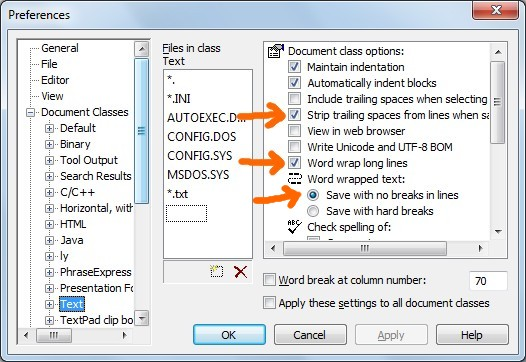
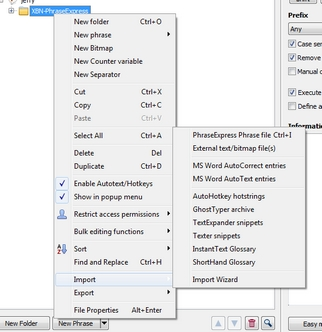
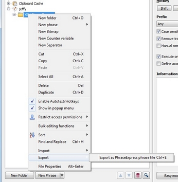

[BACK] (XBN-PhraseExpress is released under the LPGL 2.1)
I do not edit my phrases in the PhraseExpress application. I only edit them in TextPad (a plain-text editor by Helios Software Solutions). Whenever I make a change to a phrase, I import it into the PhraseExpress application before it can be used. This is akin to "compiling" the code.
Contents:
[GO] Why I do not edit phrases in PhraseExpress[GO] My personal development environment[GO] Required and recommended TextPad settings:[GO] Backup your TextPad key-command setup[GO] XBN-PhraseExpress: TextPad-bootstrapsWhile XBN-PhraseExpress is tailored to creating and editing code in TextPad, there are large portions of it that may be taken advantage of by those developing exclusively in the PhraseExpress application (or elsewhere).
Also note that I use the Dvorak keyboard layout, which may explain the otherwise unweildy autotexts I've chosen, and does explain why
{#insert zTPPaste}
must be used instead of
{#CLIPBOARD -paste}.
[top] XBNPE: TextPad: Required and recommended settingsThe following settings are required by XBN-PhraseExpress.
*.txt") document classTextPad > Configure > Preferences > View > Dockable log windows > Search Results
[S]earch > Invert [A]ll Bookmarks[E]dit > De[L]ete > [B]ookmarked-linesIt is recommend that:
TextPad > View > Status BarTextPad > Configure > Preferences > View > Line numbers[top] Backup your TextPad key-command setupThe optional assign-a-kc process in the TPKC-project overwrites your existing TextPad key-commands. Backup your current key-command setup, via:
TextPad > Help > Help Topics > How To... > Customize Settings > Transfer Preferences between PC's
[BACK] Required TextPad settings: Text "*.txt" document classPlain-text phrase-files must have the postfix "px.txt". Because of this, phrase-files by default belong in the "*.txt" plain-text document class:
TextPad > Configure > Preferences > Document Classes > Text
There are three critical settings as it relates to XBN-PhraseExpress:
[GO] Stripping trailing spaces when saving[GO] Word-wrapping long lines[GO] Saving word-wrapped text with no hard-breaks
[BACK] TextPad: Text document class setting: Strip trailing spaces from lines when savingSetting:
TextPad > Configure > Preferences > Document class options > Strip trailing spaces from lines when saving
This can be as you wish. Whatever setting you choose must be reflected in its XBNPE global-configuration-variable
zzTPTxtDefaultStripTrailingWSOnOrES
The consequence of not stripping trailing whitespace (tabs and spaces), is that processes that indeed need to strip trailing whitespace must do so manually. There are specific "strip-save" functions to assist you, which use this global configuration variable to determine if and when it should occur.
[BACK] TextPad: Text document class setting: Word wrap long linesSetting:
TextPad > Configure > Preferences > Document class options > Word wrap long lines
This can also be as you wish, and must also be reflected in its XBNPE global-configuration-variable:
zzTPTxtDefaultWordWrapOnOrES
This is used by the set-word-wrap-based-on-the-TextPad-default phrases, such as
zWordWrapOffFromTPDfltState
[BACK] TextPad: Text document class setting: Saving word-wrapped text with no hard-breaksSetting:
TextPad > Configure > Preferences > Document class options > Word wrapped text > Save with no breaks in line
This setting must be selected ("Save with hard breaks" must be unselected), in order for some significant XBNPE build processes (such as TPKC) to succeed. In particular, the TPKC-build-process will fail if this setting is on (as will most processes that somehow save files without turning word wrap off first).
In 2013, I discovered the free-and-open-source VirtuaWin. It creates multiple desktops on a single monitor, effectively simulating multiple monitors. I use this to create three desktops. I use the key-commands zCASpRIGHT to move to higher-numbered desktops (such as one to two), and zCASpLEFT to move the other direction. In general, here is my setup:
There are one or more instances of TextPad open in this desktop. I also have an Xplorer2 window open, to quickly access files. Xplorer2 is a Windows Explorer replacement.
On this desktop, I always have two Windows Explorer windows open. The directory for both is
{#insert zROOT_DIR_XBNPE_MAIN}
One has this search-term:
*.px.txt datemodified:7/27/2013 (today's date)
and the other has this:
*_pcddmenu.px.txt datemodified:7/27/2013
These Explorer windows are on the left of my screen, always open (meaning never minimized), and PhraseExpress, when opened, is on their right. These search terms cause most-recently-edited phrase-files to automatically display. This setup makes importing the phrase-files that I'm working on as easy as possible.
Note that the latter search term is for xh-phrase-creator drop-down menu phrase-files. Separating "normal" phrase-files from drop-down-menu phrase-files (although ddmenu phrase-files can't be filtered out of the general "*.px.txt" list) is because these phrase-types require different settings in PhraseExpress. For example, ddmenu phrases are "manually confirmed" and normal phrases are not. Importing these phrase types together requires that the settings for one or the other must always be changed after the import is complete. Note that in XBN-PhraseExpress, normal and "pcddmenu" phrases are always stored in separate locations.
There are two primary reasons that I do not edit phrases in PhraseExpress.
There is no way to search or replace using regular expressions in the PhraseExpress application. In particular there is no way to make replacements on any set of files, whether they are in one common parent-directory, or dispersed througout many directories. For me, this is a critical need.
While PhraseExpress has many ways of importing phrases...

...there is only one way to export it: Into a proprietary PhraseExpress format.

Therefore, any phrases created in PhraseExpress exclusively, are trapped there. While copying a few phrases out of PhraseExpress is manageable...
...copying hundreds of phrases in this manner is practically impossible.
In addition, there are significant difficulties associated with importing multiple files. In addition to your code being "trapped" in PhraseExpress, the values in the choose-import-action dialog must be chosen on every import, and in the import-phrase-format dialog, values must be chosen for every file.